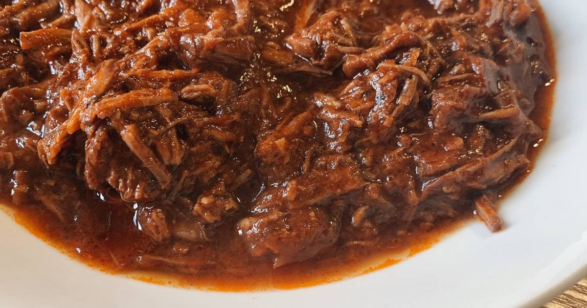

Home
Carne Desfiada

Description
Recipe by Laissa
Recipe for 1kg of meat. Delicious meal, usually for lunch.
Ingredients
- carne (fraldinha, patinho, acem)
- 2 cebolas
- 3 dentes de alho
- cheiro verde a gosto
- tomate
- paprica
- pimenta do reino
- cominho
- 1 sache de molho de tomate
Steps
- selar a carne na panela de pressao com azeite ou oleo ate ela soltar um liquido (4 a 5 min)
- acrescentar a cebola, o alho e o sal (4 colheres de cha) e mexer por mais 4 a 5 min
- temperar e acrescentar o molho de tomate
- colocar na pressao de 30 a 40min de contagem depois da panela apitar